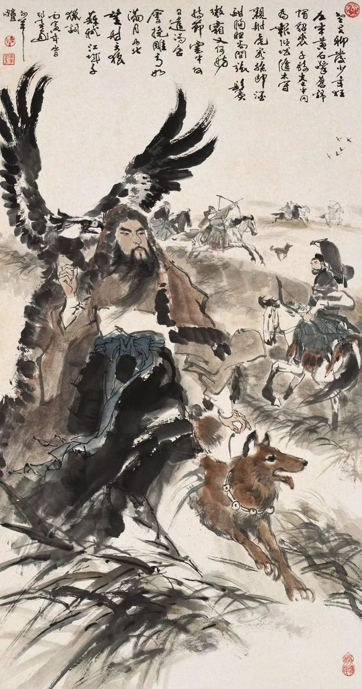
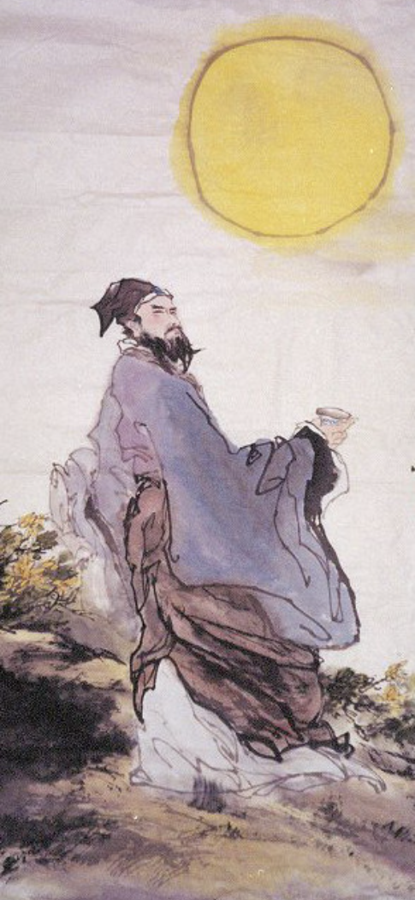

Mizhou
（Now Shandong Province）
During 1068–1079, Su Shi achieved political success, holding positions
like magistrate. Meanwhile, he reached a literary peak, creating many
masterpieces.
Be concerned about the country and the people.
《江城子·密州出猎》
老夫聊发少年狂，左牵黄，右擎苍，锦帽貂裘，千骑卷平冈。
为报倾城随太守，亲射虎，看孙郎。
酒酣胸胆尚开张。鬓微霜，又何妨？
持节云中，何日遣冯唐？
会挽雕弓如满月，西北望，射天狼。
Jiangchengzi: On a Hunting Excursion in Mizhou
Rejuvenated, I my fiery zeal display; Of left hand leash, a yellow
hound, On right hand wrist, a falcon grey. A thousand silk-capped,
sable-coated horsemen sweep Across the rising ground And hillocks
steep.
Townspeople pour out of the city gate To watch the tiger-hunting
magistrate.
Heart gladdened with strong wine, who cares About a few new-frosted
hairs?
When will the court imperial send An envoy to recall the exile? Then
I'll bend
My bow like a full moon, and aiming northwest, I Will shoot down the
fierce Wolf from the sky.

Despite being demoted, Su Shi remained passionate and courageous.
Although his official career was not smooth, he achieved something in
the political arena. This poem was his first time to write a poem and
write a preface himself, which is a pity for his vigorous and inspiring
feelings. His creative state of mind is manifested as follows: despite
being demoted, he remains generous and high-spirited, and his heart is
still full of strength. In terms of art, the allusions are natural and
the words are vigorous, reflecting a vigorous and bright masculine
style. The theme revolves around "national style, ambition and passion",
and the overall emotional tendency is passionate and confident.
《水调歌头·明月几时有》
明月几时有？把酒问青天。
不知天上宫阙，今夕是何年？
我欲乘风归去，唯恐琼楼玉宇，高处不胜寒。
起舞弄清影，何似在人间？
转朱阁，低绮户，照无眠。
不应有恨，何事长向别时圆？
人有悲欢离合，月有阴晴圆缺，此事古难全。
但愿人长久，千里共婵娟。
Prelude to Water Melody: When Will the Moon Be Clear and Bright?
How long will the full moon appear? Wine cup in hand, I ask the
sky.
I do not know what time of year, It would be tonight in the palace on
high.
Riding the wind, there I would fly, Yet I'm afraid the crystalline
palace would be, Too high and cold for me.
I rise and dance, with my shadow I play. On high as on earth, would it
be as gay?
The moon goes round the red mansion, Stoops to silk-pad doors, Shines
on those who sleepless lie.
Why does the moon, bright and round, Shine on our parting, reunion
deny?
Men have sorrow and joy; they part or meet again; The moon is bright
or dim and she may wax or wane. There has been nothing perfect since
the olden days.
So let us wish that we may live long, Though miles apart, we'll share
the beauty she displays.

This poem was composed on the Mid-Autumn night of 1076. Su Shi was
serving in Mizhou and missed his younger brother Su Zhe. Under the
moonlight, he lamented the vicissitudes of the world. His creative state
of mind is manifested as follows: Despite the setbacks in his official
career, his will has not waned, and he conveys his emotions and
yearning. In terms of art, it integrates the beauty of prose and poetry,
expresses emotions through the depiction of scenery, and is rich in
philosophical sentiments. The theme centers around "Mid-Autumn Festival,
family affection, and Life Insights", with an overall emotional
inclination towards contemplation and warmth.